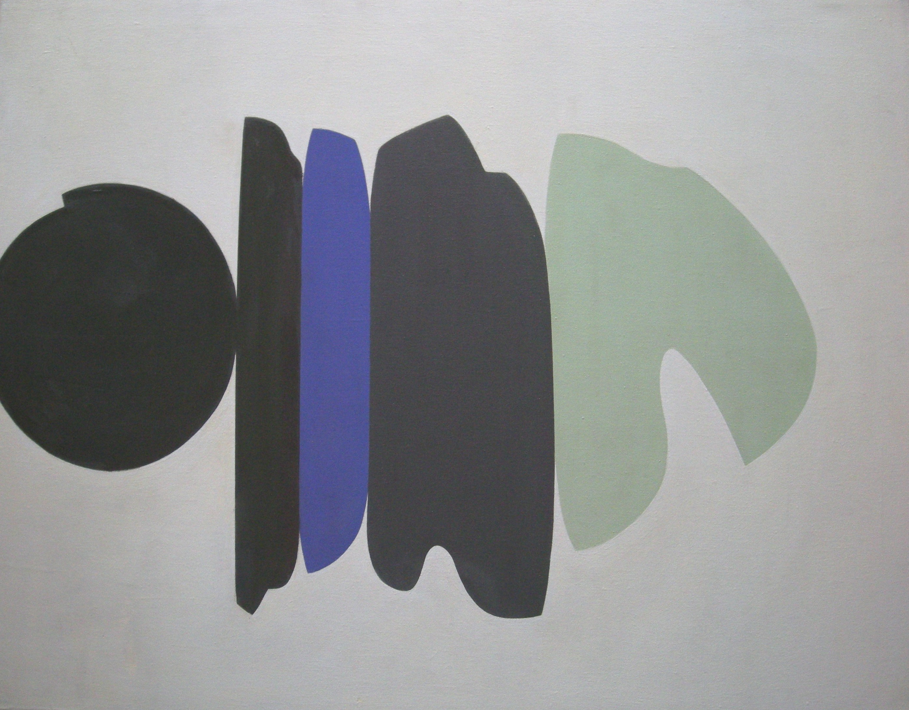

Bernard Farmer
1919 – 2002
Artist Biography
Bernard Farmer was born and lived in London. He studied at Chelsea Polytechnic School of Art and showed with London Group, New Vision Centre, St Martin’s Gallery and Artist International Association. Solo exhibitions included the AIA in 1956, Heal’s Gallery in 1963 and 1964 and Angela Flowers Gallery 1982. He also exhibited in the provinces and abroad. Farmer said that “the more simple I can make an image the better I like it … The less can always expand in the mind, whereas more either constricts or becomes too much”. Farmer was co-organiser with Malcolm Hughes of Directions-Connections at AIA Gallery 1961, and had work reproduced in Frank Avray Wilson’s Art as Understanding, 1963. The painter Adrian Heath was a strong advocate of his work. A Farmer painting was included at Bede Gallery, Jarrow’s 1984 retrospective assessing the New Vision Gallery’s influence. The critic Peter Davies said “Bernard Farmer’s collages contain the accidental jaggedness and random expressiveness of the most free-form post-war abstract painting. A lyrical and open interaction between form and space creates rhythmic movement of a musical, even jazzy kind, achieving modern art’s frequently declared intention to create visual analogies with the abstract yet palpable language of music.” John Davies Fine Paintings helped reawaken interest in Farmer’s work by showing examples in a mixed exhibition at The Gallery in Cork Street in 2005. The Katharine House Gallery in Marlborough also incuded Farmer in its ‘Modern British Collages’ show in July 2007 and ‘Modern British Art’ exhibition in 2009. Arts Council and Contemporary Arts Society hold examples, as do private collections in USA, Italy, Norway and Cyprus as well as UK.

Untitled, 1968